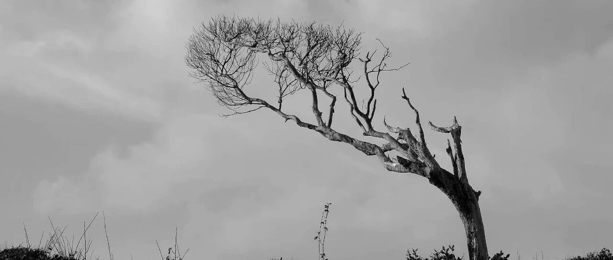

祖坟在喷火
去年和今年，我收益最高的是大饼。由于大饼和漂亮股的带动，整体收益不错。
我们生活在一个信息茧房中，很多信息要看站在哪个角度去看，内外对冲，往往才能得出相对真实的信息。当然，很多东西，我在这里没法讲。
大饼最近涨得不错，利好信息有11只大饼的ETF被批准。但下方这个解读吧，出现了典型的断章取义：

原话原意是说，批准了比特币ETF，不代表认可其他加密货币。所以信息在传递的过程中有没有被曲解很重要，真实的信息难能可贵。
经常提倡读者，要对信息有所甄别，信息要对冲着看，才不容易失实。这是我一直以来的习惯，也和我的成长经历有关。我生命中有一位很重要的贵人，小时候，他一直是我们这群人中的“神”，典型的“别人家的孩子”：
他是我亲戚的孩子，也就是我哥，年龄大我很多，我们这群同辈的弟弟妹妹们，是听着他的光辉事迹长大的：高考状元，放弃名校保研出来工作，不久后创业又迅速崛起，再到后来亿万资产......
八岁那年，我在他家玩耍，他在院子花园的一棵约一米高的茶花树旁抱起我，鼓励我要好好学习，以后走出去看看世界。那是我人生中第一次跟我的偶像如此近距离面对面谈话。
此后，我努力追寻他的脚步，虽然等级差距很大，但有个“灯塔”在那，是很不一样的。说少年立志，我觉得太虚了，少年时候哪有什么很坚定的志向啊，所谓的少年志向，只不过是语文作文上拿高分的一种密码而已。
但少年时给自己树立个看得见、摸得着的偶像和标杆，那还是很现实的。少年时光匆匆而过，想起来那天的场景，至今都挺鲜活。时间仍然在向前流淌，我也拥有自己的人生，经常回顾再回味那段被激励的往事。
后来，我也沿着他的足迹，走出去看这个世界，分析他的投资轨迹和资产布局，试着站在他的角度上，去理解他做投资和布局的意图和想法。因此，那段时间的我，成长得飞速。
再后来，有了如今的我。我是如此幸运，在成长道路上，有个人能引领我前进、成长。现在，我每年会去给他爸妈拜年，附上一份红包和礼物，说是分享过去一年取得成就的喜悦，但其实也是在内心深处向他致敬。
可以说，我这几十年的成长，很大一部分原因，是因为有他的存在和引领，这种引领，如同一个人走过的足迹，在地上留痕，后人顺着这个痕迹往前摸索。虽然我们现实几年都没碰一次面，也鲜有对话和沟通，但这并不妨碍他在精神层面、思想高度上引领我成长。
时常会感慨，我家祖坟喷火，运气好得爆棚，让我能如此幸运。
后来的我，也做好了内外的资产布局，信息的对冲和筛选，投资和思考各有不同，但殊途同归。过去两年，我也因此得益，资产总体量翻倍，这个很难，尤其是体量越大的情况下。
我有了自己的孩子，在教育孩子时，我时常会想起小时候的自己，会想起那时的自己需要什么样的朋友和导师，需要什么样的“标杆”，然后给孩子做规划，引导他们向前。
娃们和我的关系，就像最好的朋友，虽然我从来没揍过、凶过他们，但这并不妨碍娃把我当成最惧怕、最厉害的人，哈哈哈。我希望自己的孩子像个正常人，不追星。
什么体育运动员、艺人明星，除了底子好之外，只不过是把普通人拿来读书的时间，用来训练其他技能了。人的时间都是有限的，她有长处，必然有短处。很多艺人的知识素养惨不忍睹，金玉其外，败絮其中。
所谓见贤思齐焉，不是让你见贤跪拜之。这世上，除了恩人和父母，没人值得你跪。当然，目前为止，我对娃们的整体还是很满意的，三观正，也知道开眼看世界，不受困于信息茧房。
前段时间带大儿子去坐绿皮火车，起因是他有段时间有点飘，自以为是，对同龄人会骄傲，不够有同理心，会抱怨不公平，觉得自己拥有的理所当然。殊不知，这是得益于他的父母，也就是我。
我带他坐绿皮火车，是希望他看点平时生活中看不到的。世界之大，很多苦难是超出我们的认知范围的，但不代表它们没有，只不过我们没有经历过，就无法理解，更无法代入到自己身上。
亲眼看看他人的境遇，才知道相比之下，我们拥有的已经很多，没有什么好抱怨的。也让他知道，要靠自己努力，去一个更好的平台（大学），这是父母没法直接帮他做到的。父母早晚都会从他的生活中退出，他早晚要独立去面对生活和这个世界。
人的本质是孤独的，当一切喧闹喧哗都离自己远去的时候，我们也应该学习如何和自己和平相处。
适应孤独是每一个人的必修课。